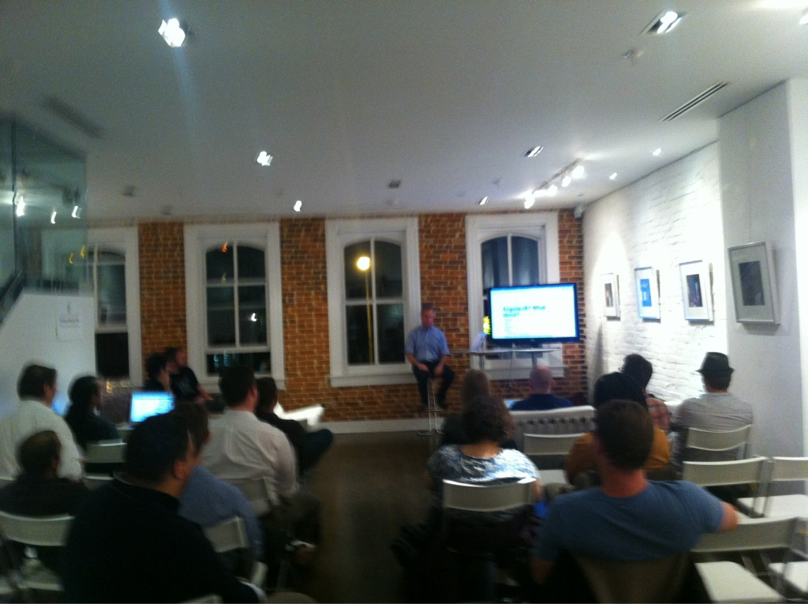

jQuery Events
presented at
November 12, 2012
Follow Along
Hi, I'm Russell Heimlich
- Lead technical figure-outer at
Pew Research Center
- Creator of http://dummyimage.com
- Left handed
What Are Events?
What are JavaScript Events?
- JavaScripts adds interactivity to a page
- User does something, the page reacts
- Events trigger something else to happen
via Introduction to Events by Quirksmode.org
Classic Inline Event Example
<a href="#" onClick="alert('hello world')">Show Pointless Alert</a>Lots of Events To Choose From
- onClick
- onDblClick
- onFocus
- onBlur
- onChange
- onSubmit
- onLoad
Keyboard And Mouse Specific Events
- onKeyDown
- onKeyUp
- onKeyPress
- onMouseDown
- onMouseUp
- onMouseOver
- onMouseOut
- onMouseMove
Inline Event Attributes are Bad
- Mix HTML and JavaScript, no separation
- Escaping quotes will drive you insane
- General all-around pain in the rump
via JavaScript Events Best Practices on Stackoverflow
Remember Dreamweaver Image Rollovers?
OMGWTFBBQ?!?!
A Better, Unobtrusive Way to Register Events Arrived
element.addEventListener('click', functionName, false);click not onclick
via Advanced Event Registration Models by Quirksmode
But Microsoft Had Their Own Way
element.attachEvent('onclick', functionName);jQuery To the Rescue!
- Smooths out cross-browser differences
- Uses an intuitive syntax for events
- Allows us to writes less, but do more
via JavaScript vs. jQuery by AlbertoPL
Steps to Register An Event Using Jquery
- Select one or more elements
- Tell jQuery what type of event to listen for
- Write a function that will be fired when that event happens
What does that look like?
(Pseudo code)
$('selector').event(function() {
//Your Code Goes Here
});Basic Example
$('a').click(function() {
alert('Hello World');
});
Just kidding. There's more…
Using This
this is a special variable that refers to the specific element triggering the event.
$('a').click(function () {
alert(this.href);
});Using jQuery With This
You can use this as a selector and use jQuery methods just like any other element.
$('li').click(function() {
alert( $(this).text() );
});Input Validation
Using keyup() attached to an input field, we can check if the value of the input meets a certain criteria.
$('input').keyup(function() {
$(this).attr('class', '');
var val = $(this).val();
if( val.length < 4 ) {
$(this).addClass( 'bad' );
}
});
You Can Interupt Submitting a Form
This is useful for checking if certain fields are filled in or you want to perform an AJAX request.
$('form').submit(function() {
if( condition == false ) {
//returning false cancels the form from being submitted.
return false;
}
//returning true will allow the form to be submitted.
return true;
});
Are you sure you want to search Google?
Displays a confirmation box asking if you want to search for the entered term on Google.
$('form').submit(function() {
return confirm('Are you sure you want to search Google?');
});
Getting Additional Event Details
jQuery passes an event object to the function being triggered by the event.
The event object is normalized across different browsers and contains extra data about the context of the event.
The Event Object Contains Data Like:
Follow the Twitter Example
Get x most recent followers and move them around the screen as a swarm based on where you click.
$(document).mouseup(function(e) {
imgAttract(e.pageX, e.pageY);
});
via Follow the Twitter by Me
Stuff I Don't Have Time To Cover But You Should Know
Resources
Questions?
Tweet me, @kingkool68, or contact me.